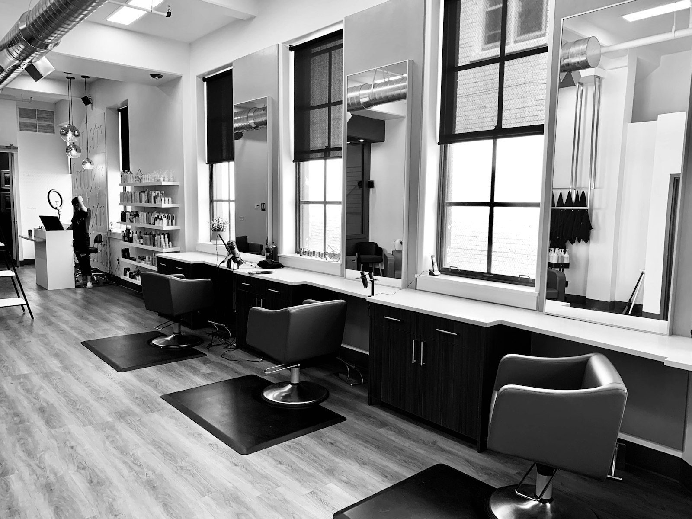

Hair studio
A careful cut. Color that grows out kindly.
Linen Chair is a one-room studio for haircuts and color. The work is shaped around the hair you already have, and around the time you can spend on it between visits.

Services
Priced at the visit, after a short talk about length, color, and how the hair behaves at home.

Cut
A dry consult, then the cut. Fringe, layers, or a blunt shape. We finish so you can see the line in the mirror.
Color
Root color, a gloss, or a lighter piece through the mid-lengths. We talk about the grow-out before the color is mixed.
Cut and color
Both in one visit when the schedule allows a long chair. Color first, then the cut once the hair is dry.
Shape only
A fringe trim or a small clean-up between full cuts. Bring a photo only if it helps the words.
In the chair
- 01
Conversation
We look at the hair dry, ask what you want to keep, and say if the idea needs more than one visit.
- 02
The work
Color is applied in sections you can follow. A cut is checked in the mirror before it is dried.
- 03
Home notes
You leave with how to wash it this week, not with a shopping list you did not ask for.
The studio
16 Example Court. Linen Chair sees clients from the court and the nearby blocks. The room has three chairs. One stylist works at a time, so the schedule is the schedule.
Questions
How long is a color visit?
A gloss is often a short afternoon. A root retouch with a cut is longer. We give a time when we book, based on the hair, not a single number for everyone.
I have not had a haircut in a long while.
That is a normal first visit. We decide together how much length to take, and we can stop shorter of a big change.
Do you use a particular color line?
We use professional color chosen for the hair in the chair. The bowl is mixed for that visit.
Can I bring a child to sit with me?
A quiet seat is fine. The room is small, so a long visit with several children is better on a quieter weekday.
Request a chair
Call, email, or send the form. Say whether you want a cut, color, or both, and a day that suits you.